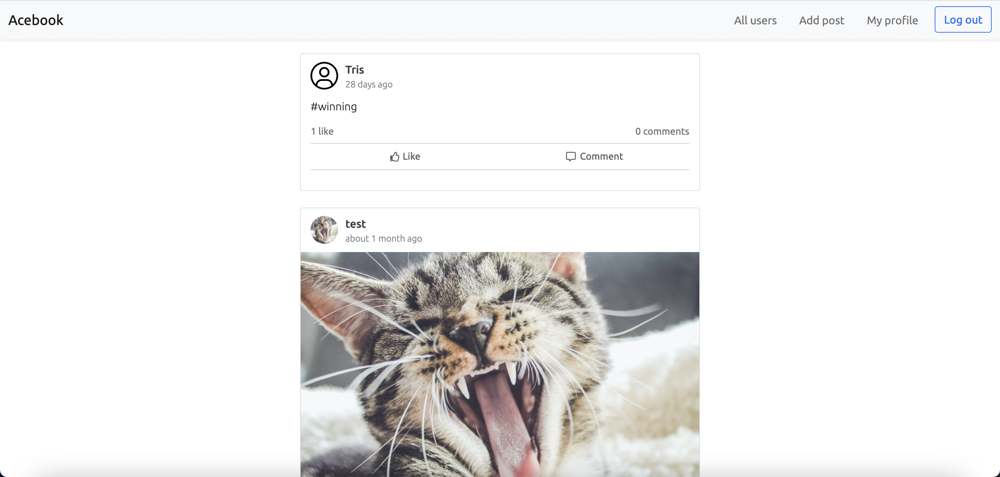
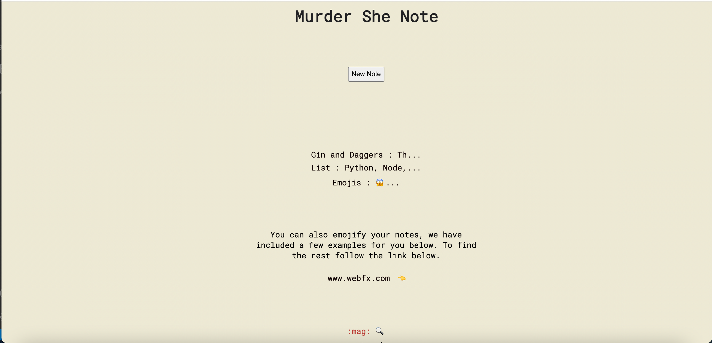

TradeRunner
TradeRunner is an automatic trading bot. Connected to Binance via API's and a websocket, it receives a constant stream of data which is displayed on the web app for our coins of interest. Additionally, our script uses this data to determine whether certain conditions are met and, therefore, whether a trade should be executed. Our bot is currently using the Golden Cross trading strategy. Account information such as balance, number of coins, profit and loss etc. are also displayed on our web app, and when the bot is turned off suggested trades can be seen.
Technologies Used:
- Python (and Unittest)
- Django
- MySQL
- HTML
- CSS
- Bootstrap
- Binance API
Where to find TradeRunner
You can find TradeRunner on GitHub, or alternatively see our demo and presentation here.

Acebook
Acebook is a fully functioning, all singing, all dancing facebook clone. Built using Ruby on Rails it allows for users to create an account and sign in, view their (and other users) walls, view their feed, and post, comment and like to their hearts content.
Technologies Used:
- Ruby
- Rails
- RSpec
- PostgreSQL
- Javascript
- HTML
- CSS
- Bootstrap
- Sass
- Heroku
Where to find Acebook
You can find Acebook on GitHub, or alternatively it is hosted on Heroku here.

Murder She Note
Murder She Note is a single page app built using pure Javascript, with our own testing framework we built. The app allows you to input a note with a title and message, and then displays abbreviated versions of the note. You can click on the notes to see the full contents. Connected to an API which allows you to use emoji's in your notes.
Technologies Used:
- Javascript
- HTML
- CSS
- RESTful API
- Own testing framework
Where to find Murder She Note
You can find Murder She Note on GitHub.